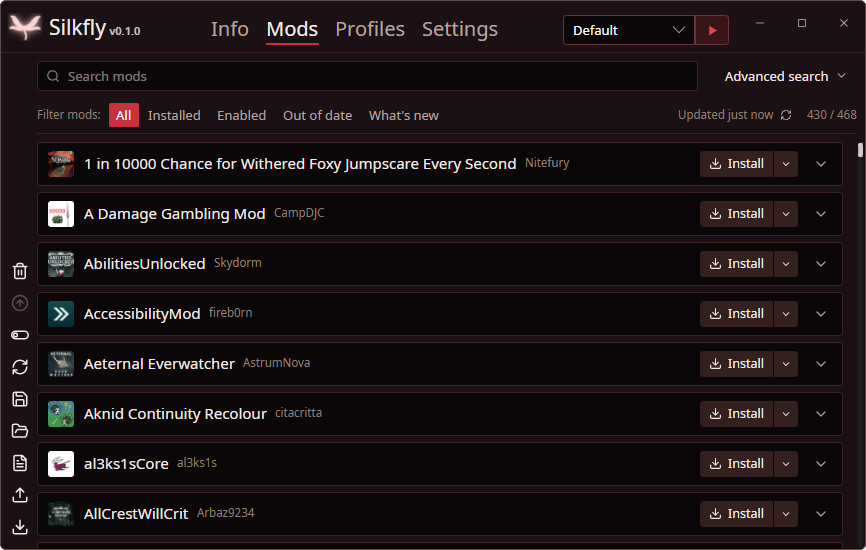

Silkfly
Мод-менеджер для Hollow Knight: Silksong
СкачатьДругие системы
Моды для Silksong с Thunderstore ставятся в один клик. Silkfly сам настроит загрузчик BepInEx, поставит зависимости и разложит моды по профилям. Windows, Linux и macOS.
Возможности

- Каталог Thunderstore с поиском, фильтрами и категориями
- Установка в один клик вместе с зависимостями, обновление всех модов сразу
- Профили: отдельные наборы модов, которыми можно поделиться файлом или кодом
- Игра с модами и без
- Работает без интернета по сохранённому каталогу
- Русский и английский интерфейс
Как установить моды на Silksong
- Скачайте Silkfly и запустите.
- Он найдёт игру в Steam или GOG (или укажите папку) и поставит BepInEx.
- Нажмите «Установить» у нужных модов.
- Нажмите «Играть с модами».
Windows. Если SmartScreen предупреждает, нажмите «Подробнее», затем «Выполнить в любом случае». Цифровой подписи у Silkfly пока нет.
macOS. Если система пишет, что приложение повреждено, перенесите его в «Программы» и выполните в Терминале xattr -dr com.apple.quarantine /Applications/Silkfly.app.
Linux. Сначала выполните chmod +x Silkfly-Linux.AppImage.
Вопросы
Это безопасно?
Код Silkfly открыт, каждый релиз собирается на GitHub из исходников. Цифровой подписи пока нет, поэтому SmartScreen предупреждает, а на VirusTotal один-два антивируса из примерно 70 могут сработать по эвристике.
Я уже пользуюсь другим мод-менеджером.
Если в папке игры уже есть BepInEx, Silkfly сначала спросит, а потом перенесёт эти файлы в .silkfly-backup, откуда их можно вернуть.
Где лежат мои файлы?
Настройки и профили хранятся в %LOCALAPPDATA%\Silkfly на Windows, в ~/.local/share/Silkfly на Linux и в ~/Library/Application Support/Silkfly на macOS.
С модами игра зависает на чёрном экране.
Обычно какой-то мод не поддерживает вашу версию игры. Проверьте игру кнопкой «Играть без модов», потом выключайте моды по одному. Журнал лежит в BepInEx/LogOutput.log в папке профиля.
Работает ли на Steam Deck?
У Silkfly есть версия для Linux, она запускается в режиме рабочего стола. Игра на Steam Deck идёт через Proton, и такой запуск пока не проверялся.
Это бесплатно?
Да, Silkfly бесплатный, с открытым кодом под лицензией GPL-3.0.